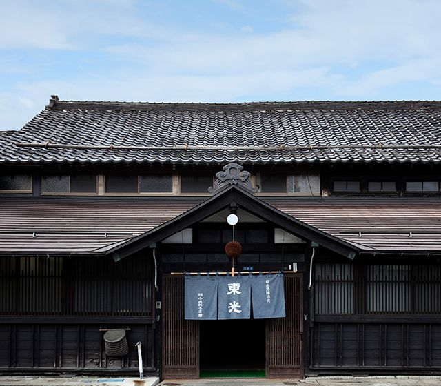
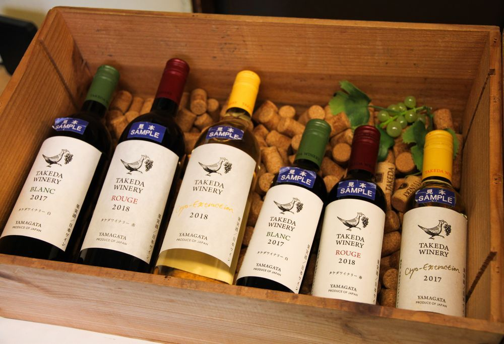

天童葡萄酒
天童よしみTendo wine
天童葡萄酒介紹
 山形縣內有54家釀日本清酒廠及14家釀葡萄酒廠，尤其是日本清酒，榮獲日本全國頂級的評價，是日本重要的清酒產地，葡萄酒也為日本四大產地之一。
山形縣內有54家釀日本清酒廠及14家釀葡萄酒廠，尤其是日本清酒，榮獲日本全國頂級的評價，是日本重要的清酒產地，葡萄酒也為日本四大產地之一。
山形縣各產酒區也運用與酒相關資源開發主題旅遊商品。2018年4月也設置「美食美酒觀光推進室」，目標以山形縣出產的如櫻桃等食材、酒、傳統文化等觀光素材做整合，積極宣傳並推動吸引觀光客。山形清酒美味秘訣在於優良的水土培育的稻米，鳥海山、月山、藏王等名山源頭流下來清澈的水，由各地區合力培養人才與提升釀造技術。
在全國新酒鑑評會中，與新潟縣、福島縣爭取首獎，2017年於全美日本酒歡評會中，山形縣眾多的清酒當中，金獎、銀獎的獲獎率是68.5%，居日本第一，在10年連續金賞獲獎數第一名。
此外，山形縣以乾淨的水與肥沃的土地所孕育出來的米所釀造出來的酒聞名，既是降雪很多的地區，又是個山清水秀的好地方，這樣的山形縣出產的米釀製而成的酒，在日本被稱為‘酒之白眉’而獲得認證。
板蕎麥麵的由來
 在山形，蕎麥麵容顏素淨、色澤天然，樸實如大地吐納而成的絲線，經過滾水洗浴、冰水滑溜之後，挽成一卷盛入端正的木製餐盒內，散放出平易近人的庶民之香。蕎麥是生長在寒冷地區的植物，山形縣有最上川絕佳水質的灌溉，非常適合蕎麥的生長，蕎麥生得又高又壯，當地出產的蕎麥做出來的蕎麥麵與眾不同，特別爽口、充滿蕎麥香氣。
在山形，蕎麥麵容顏素淨、色澤天然，樸實如大地吐納而成的絲線，經過滾水洗浴、冰水滑溜之後，挽成一卷盛入端正的木製餐盒內，散放出平易近人的庶民之香。蕎麥是生長在寒冷地區的植物，山形縣有最上川絕佳水質的灌溉，非常適合蕎麥的生長，蕎麥生得又高又壯，當地出產的蕎麥做出來的蕎麥麵與眾不同，特別爽口、充滿蕎麥香氣。
山形最具代表性的蕎麥麵就是「板蕎麥麵」，所謂「板」指的是以秋田杉所製成的木製盒，這種蕎麥麵的特色就是裝在木製麵盒裡，除了蕎麥香味之外，還多了一份杉木香，且份量十足，最適合食量大的饕客滿足口腹之慾。
山形酒觀光美食推薦
山形酒展示館＆湯煙屋台小菜
 山形縣產的日本酒皆是受到GI「山形」認定的酒類商品，而所謂的GI就是由產地名稱當作智識財產保護的制度，目前在館內提供的日本酒，都有通過此認證。
常備的酒約有50種，如果不是很懂日本酒也沒關係，MENU將各種地產日本酒的特性介紹得相當清楚，讓客人可以從中選擇自己在意的商品。
山形縣產的日本酒皆是受到GI「山形」認定的酒類商品，而所謂的GI就是由產地名稱當作智識財產保護的制度，目前在館內提供的日本酒，都有通過此認證。
常備的酒約有50種，如果不是很懂日本酒也沒關係，MENU將各種地產日本酒的特性介紹得相當清楚，讓客人可以從中選擇自己在意的商品。
此處除了販賣山形地產日本酒之外，合併設施的「湯煙屋台小菜」也同時提供芋煮、藏王牛等山形的地方料理，其中超人氣料理「藏王牛肉排」的肉汁飽滿、肉質細緻，享用時適合搭配帶點酸甜味的日本酒「秀鳳」，更能帶出紅肉料理的淡鹽味。
東光釀酒廠

東光釀酒廠擁有日本東北地區最大規模的日本酒原料發酵設備，在此被細心維持下來的每一個角落與保存下來的道具，都留下了往昔過去釀酒師們在作業時的點點痕跡，讓人窺見往昔釀酒廠的忙綠且熱鬧的風貌。
館內最有迫力的是陳列在釀酒作業區的兩大排大木桶，這些群聚的大木桶們，更加確實了身在酒藏中的實感，也讓這一區成為館內最有代表性也最熱門的拍照景點之一。
東光系列的日本酒近年來在日本酒賞上留下不少漂亮的成績，大大小小的金賞不說，海外輸出的國家也多達19個國家，而台灣更是東光酒藏的第一個海外輸出地。目前最受到矚目的商品，是摘下三個梅酒大會優勝的「吟釀梅酒」。
高畠酒莊
高畠町位於山形縣東南方，自古以來盛產水稻，但同時也是栽培葡萄及洋梨等等，是東北有名的水果大本營。高畠一帶因為盆地地形的關係，造成夏秋之際日夜溫差大，加上降雨量偏低、日照時間長等條件，成就了蘊育優質葡萄的最佳環境。 廣闊的葡萄園栽培的則是釀酒用的葡萄，不同於普通的食用葡萄，釀酒用的葡萄只有藍莓般的大小、皮厚肉薄、而且甜度極高，因為釀酒的過程需要透過糖分和酵母作用才能產生酒精，高甜度可說是釀酒葡萄的先決條件。 商品販賣區的商品多樣性讓人感到好奇雀躍，什麼都想嘗試！販賣區不定期地開放試喝，雖然不是全部的種類，但透過試喝，能更清楚自己喜歡的口味，再請工作人員推薦。
總結

山形的日本酒會如此出名，正是因為擁有優質的水質與稻米；葡萄酒會如此香醇，也是因為地形條件的獨厚。
旅行最大的意義，從來就不只是吃飽喝足，若能藉由飲食文化更了解一個地方，那麼這趟旅行也就會更有意義了呢！